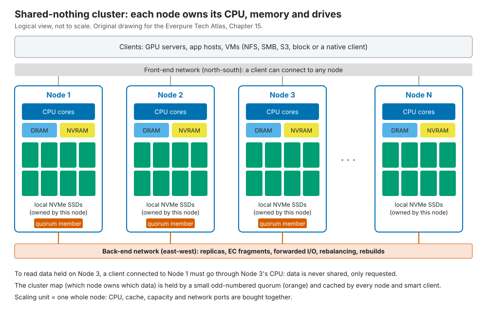
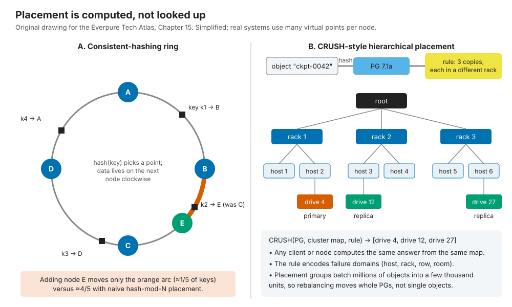

15. Scale-out shared-nothing clusters¶
Depth: L2 · Reading time: ~9 min · Last verified: 2026-11-01 Prerequisites: Data protection and resilience · Datacenter networking · Scale-up dual-controller arrays
TL;DR¶
- A shared-nothing cluster is identical servers that each own their CPUs, memory and drives. The scaling unit is a whole node. PowerScale (Isilon), WEKA, Ceph, Qumulo and Nutanix work this way; ONTAP does at the level of HA pairs.
- Placement is computed, not looked up. A consistent-hashing ring or CRUSH-style function maps data to nodes, so adding a node moves only about 1/(N+1) of the data.
- The network does the real work. Replicas, erasure-coded fragments, forwarded reads and rebuilds travel east-west. At 16 nodes, ~94% of read bytes come from a peer.
- The cluster heals itself. An odd-numbered quorum owns the cluster map, lost nodes are rebuilt many-to-many, and a partition's minority side stops writing.
- The walls are bundled scaling, rebuild storms, hot spots and node limits. It is the incumbent design that disaggregated systems define themselves against.
Why this matters for Everpure strategy¶
Most scale-out file and object storage Everpure competes against is shared-nothing. PowerScale is the unstructured-data incumbent, WEKA the software-defined challenger in GPU clusters, and Ceph the open-source default for operators building their own. Deals against PowerScale, WEKA or "Ceph on our own servers" turn on this chapter's strengths and walls.
The architecture also explains a partnership. Hyperconverged (HCI) clusters such as Nutanix are shared-nothing, so storage grows only when compute grows. In 2025 Pure Storage and Nutanix announced FlashArray as external storage for Nutanix AHV, Nutanix's first major certified external-storage integration1. That deal sells against the bundled-scaling wall.
Core concepts¶
The idea in one picture¶
Each node is a full server: CPUs, DRAM cache, an NVRAM or journal device, and NVMe drives no other node can address. Clients connect to any node over the front-end network; nodes talk over a back-end network. A few nodes run a quorum service, the authoritative record of membership and ownership.

Figure 15.1 — Data is never shared, only requested: reaching another node's bytes means asking its CPU over the back-end.
Semiconductor bridge: a multi-socket NUMA server. Each socket has local DRAM; a remote access crosses UPI or Infinity Fabric to another socket's memory controller, slower and bandwidth-hungry. Shared-nothing storage is NUMA at datacenter scale. The coherence parallel is closer still. In directory-based coherence, every cache line has a home node whose directory tracks sharers, and a contended line serializes there. In a cluster, every object has an owner or primary node, and a hot key serializes on it the same way. Chapter 16 is the UMA alternative.
Where state and metadata live¶
Everything lives on the nodes. Data is striped across nodes under replication or erasure coding (EC); OneFS spreads data, metadata and parity across nodes, using Reed-Solomon EC for data and mirroring for metadata2. Metadata (inodes, directories, block maps) is sharded too, and designs differ in how: WEKA spreads it across all nodes3, while Ceph's file layer adds separate metadata servers.
The one piece of state that cannot be sharded is the cluster map: membership, health and placement rules. Ceph keeps it in a few monitors that agree on changes by Paxos and majority vote4. Nodes and smart clients cache the map and tag requests with its version (epoch), so stale views are caught.
Placement: hash it, don't look it up¶
A central table of every object's location would become the bottleneck, so shared-nothing systems compute placement instead.
- Consistent hashing (Karger et al., 19975) puts nodes and keys on a ring; each key belongs to the next node clockwise. Amazon's Dynamo (2007) added many "virtual nodes" per server to even out load6.
- CRUSH (Weil et al., 20067) hashes objects into placement groups (PGs), then maps each PG to drives by walking a host-and-rack hierarchy under a rule such as "three copies in three racks". Anyone with the same map computes the same answer, and map changes move little data7.

Figure 15.2 — Computed placement needs no directory and moves only about the new node's fair share of data.
Semiconductor bridge: address interleaving. Memory controllers hash physical addresses across channels, banks and LLC slices so no channel becomes a hot spot; clusters hash keys across nodes for the same reason. The difference: a memory system never re-interleaves at run time, while a cluster must, under live I/O.
Tracing a write¶
sequenceDiagram
participant C as Client
participant K as Coordinator node
participant P as Primary or owner node
participant R as Peer nodes
C->>K: WRITE 1 MB to file F
K->>K: hash file and offset against cluster map
alt replicated pool
K->>P: forward write unless K is the primary
P->>P: persist to local NVRAM or journal
P->>R: send two replica copies
R-->>P: persisted
P-->>K: committed
else erasure-coded layout
K->>K: split into 8 data and 2 parity strips
K->>R: send strips to 10 nodes in distinct failure domains
R-->>K: each strip persisted
end
K-->>C: ACK after all copies or strips are durableFigure 15.3 — The ACK waits until every copy or strip is durable on peers, so write latency includes at least one back-end round trip.
OneFS follows the EC branch: the node a client connects to computes parity and commits strips to peers, journaling in NVRAM. Ceph skips the coordinator: clients run CRUSH themselves and write to the primary OSD (the daemon managing one drive), which replicates and acknowledges once all copies are stored4.
Worked example (east-west on writes). A client writes 1 GB/s. Under three-way replication the primary sends 2 GB/s to replicas, plus up to 1 GB/s if the coordinator forwards first: 2–3 GB/s of back-end traffic. Under 8+2 EC the coordinator sends 10/8 = 1.25 GB/s of strips. Against roughly 4× in DASE, shared-nothing is cheaper on writes; its cost shows up on reads.
Tracing a read¶
sequenceDiagram
participant C as Client
participant K as Coordinator node
participant L as Local drives on K
participant R as Owner peer nodes
C->>K: READ offset X of file F
K->>K: check DRAM cache and resolve layout
alt strip is local
K->>L: NVMe read
L-->>K: data
else strip lives on peers
K->>R: back-end read request
R->>R: read from their drives or cache
R-->>K: data
end
K-->>C: reassembled dataFigure 15.4 — Whichever node holds the data serves it; the coordinator mostly stitches together peers' answers.
With data spread evenly over N nodes, a client finds only 1/N locally. At 16 nodes, 15/16 ≈ 94% of read bytes cross the back-end, which must be sized at least as large as the front-end. Smart clients (Ceph's, WEKA's) skip this hop by reading straight from owners; Nutanix's data locality instead keeps a VM's data on its own node.
Rebalancing: node add and node loss¶
flowchart TD
E["Topology change"] --> Q["Quorum commits new cluster map epoch"]
Q --> D{"Node added or lost?"}
D -->|added| A1["Each node computes which PGs or stripes move"]
A1 --> A2["Throttled background copy to new node"]
A2 --> A3["Old copies deleted after new ones are durable"]
D -->|lost| L1["Grace timer: is it a reboot?"]
L1 -->|back in time| L2["Resync only changes made while away"]
L1 -->|timer expires| L3["Mark out and serve reads degraded"]
L3 --> L4["Many-to-many rebuild into spare space on survivors"]
A3 --> H["Cluster healthy"]
L2 --> H
L4 --> HFigure 15.5 — Adding a node is a throttled migration; losing one starts a race to restore redundancy before a second failure.
![Two-panel illustrative line chart. Panel A: when one node is added to N nodes, naive hash-mod-N placement moves about 80 to 98 percent of data, while consistent hashing or CRUSH moves 1/(N+1), falling from 20 percent at 4 nodes to under 2 percent at 64 nodes. Panel B, log scale: hours to rebuild one lost 80 percent full node with 8+2 erasure coding fall as the cluster grows, from about 82 hours at 10 nodes to about 3 hours at 252 nodes with 30.72 TB drives, and are four times longer with 122.88 TB drives.](../../assets/charts/ch15-rebalance-rebuild.svg)
Figure 15.6 — Illustrative: computed placement keeps adds cheap, but rebuild time grows with node size and shrinks only as clusters widen.
Data: data/ch15_rebalance_rebuild.csv
Panel B's math: a node of 24 × 30.72 TB drives at 80% full holds 590 TB. Under 8+2 EC each rebuilt strip reads 8 strips and writes 1, so 9 bytes cross the network per byte restored. If each survivor donates 2 GB/s, a 10-node cluster restores 9 × 2 ÷ 9 = 2 GB/s: about 82 hours. At 64 nodes it is ~12 hours; with 122.88 TB drives, four times longer.
How it scales and where it hits walls¶
- Bundled scaling. Each node adds fixed CPU, cache, capacity and ports. Capacity-heavy workloads pay for idle CPUs; throughput-heavy ones pay for idle terabytes. Mixed node pools only soften this.
- East-west amplification. Reads cross the back-end (N−1)/N of the time; rebuilds multiply traffic by the code width.
- Rebuild storms. Bigger drives make every node loss longer and noisier. At Facebook, recovering Reed-Solomon-coded data added more than 100 TB a day of cross-rack network traffic8; locally repairable codes roughly halve repair traffic9.
- Hot spots. Hashing spreads keys, not load. A million-file directory, or one checkpoint read by 1,000 GPUs, lands on its owner, like a contended line stalling at its home directory.
- Membership limits. Failure detection and all-to-all connections grow with node count. PowerScale tops out at 252 nodes on an Ethernet leaf-spine back-end10; ONTAP at 24 nodes for NAS and 12 for SAN11.
Failure handling¶
| Failure | What happens | Blast radius / cost |
|---|---|---|
| Drive | Strips rebuilt from peers into spare space on many nodes | Small. Parallel rebuild; brief extra east-west load |
| Node | Grace timer, then many-to-many rebuild. OneFS +2d:1n survives 2 drives or 1 node; N+M EC needs ≥2M+1 nodes2 | 1/N of capacity and performance lost; hours to days to rebuild (Figure 15.6) |
| Back-end link or switch | Dual back-end fabrics with failover; a node cut off from peers is fenced out of the cluster | A flapping link can trigger repeated mark-out and resync churn |
| Front-end link | Client IPs move to surviving nodes (for example, OneFS SmartConnect) | Brief stall or reconnect for clients on that node |
| Partition (split brain) | Only the side holding a quorum majority keeps the map and accepts writes. 5 monitors tolerate 2 failures | The minority side goes read-only or offline, by design |
Table 15.1 — There is no partner controller in this design: the cluster heals itself, and the price is rebuild traffic and a quorum that must be protected.
Pros, cons and fit¶
| Shared-nothing strength | Shared-nothing weakness | |
|---|---|---|
| Scaling | Linear add-a-node growth; commodity servers; no special fabric | Capacity and performance bundled; membership limits (24–252 nodes) |
| Performance | Local reads possible; writes cheaper on the network than DASE | Most reads hop through a peer unless clients are smart |
| Resilience | No single controller pair; parallel, many-to-many rebuild | Node loss is a big rebuild; partitions need quorum discipline |
| Efficiency | EC across nodes; per-TB software pricing | Small clusters need narrow stripes or replication (≥2M+1 nodes) |
| Lifecycle | Rolling, node-by-node upgrades; mixed generations | Every reboot creates a window of reduced redundancy |
Table 15.2 — Shared-nothing trades bundled scaling and network-heavy recovery for simplicity, commodity hardware and no controller bottleneck.
Best fit: large file shares, media and genomics archives, analytics lakes, HCI VM estates, and GPU clusters whose throughput-to-capacity need matches a server's built-in ratio; software-defined variants suit operators who pick their own servers. Worst fit: latency-critical block databases (dual-controller arrays are simpler), very capacity-heavy archives (idle CPUs; see object storage), sites under about 3–5 nodes, and namespaces that must outgrow the node limit.
Cost and operational implications¶
Commodity hardware shifts value to software, which is why WEKA, Qumulo and Ceph vendors price per terabyte or node. Operations get harder in three places: back-end network sizing, free-space reserve (often one node's worth, to absorb a rebuild), and rolling upgrades that reboot nodes one by one. Incremental growth is the strong suit: add a node, rebalance, retire the oldest later.
How Everpure approaches it vs. competitors¶
| System | Node model | Placement and protection | Notes |
|---|---|---|---|
| Dell PowerScale (OneFS) | 3–252 nodes, each with its own drives | Reed-Solomon EC across nodes; metadata mirrored210 | OneFS 9.15 claims up to 35 GB/s reads per node on next-gen nodes and makes pNFS GA12 |
| WEKA NeuralMesh | Software on commodity or cloud servers | Stripes of 3–16 data plus 2–4 parity strips; N+4 aimed at 100+ servers13 | Data and metadata on all nodes; NeuralMesh 6 announced July 2026314 |
| Ceph RADOS | OSD per drive, monitors for quorum | CRUSH placement; replicas or EC; "FastEC" in Tentacle (2025)715 | Open source; Red Hat bought Inktank for ~US$175M in 201416 |
| NetApp ONTAP cluster | HA pairs federated over a cluster interconnect | Each pair owns its aggregates; volumes move between pairs | Up to 24 NAS nodes11; AFX (2025) moves ONTAP to shared media17 |
| Qumulo | Software on commodity or cloud nodes | Erasure-coded block layer across nodes [VERIFY: current protection scheme] | Became software-only under CEO Doug Gourlay (2024)18 |
| Nutanix | One controller VM per HCI node | Replication factor 2 or 3 across nodes19 | Supports FlashArray as external storage since 20251 |
| Everpure FlashBlade//S | Chassis of 7–10 blades; each blade takes 1–4 DirectFlash Modules, so compute and capacity are sized separately | Global EC and flash management in Purity//FB; namespace split into "authorities" that run on blades2021 | Pure calls Purity//FB "partitioned-writer" and rejects the binary label22 [VERIFY: multi-chassis data placement] |
Table 15.3 — Every major scale-out incumbent is shared-nothing at heart; Everpure's file platforms sit between the patterns rather than in one.
Everpure sells no classic shared-nothing product. FlashArray is dual-controller (Chapter 14). FlashBlade//S scales out blades in a chassis. Pure Storage describes Purity//FB as a "partitioned-writer" design and argues that the shared-nothing versus shared-everything label obscures more than it reveals22. Metadata and write ownership are partitioned into "authorities" running on each blade, much like shared-nothing owners, while Purity manages DFM flash and NVRAM globally2120. One Pure data sheet even calls FlashBlade "shared-nothing"23. The fair summary is a partitioned scale-out design with pooled media management, not shared-everything in the DASE sense. FlashBlade//EXA splits metadata from data, yet its data nodes each own their NVMe, giving the data tier a shared-nothing flavour (Chapter 16).
The steelman for PowerScale is maturity: two decades of OneFS, a vast installed base, and now pNFS and a parallel "Lightning" tier on common hardware24. For WEKA and Ceph it is freedom over hardware and clouds. Options a strategy team might evaluate, based on public information: attacking the bundled-scaling wall in HCI estates, and leading with rebuild-time and failure-domain math against large-drive clusters.
History and trajectory¶
timeline
title Shared-nothing storage milestones
1997 : Consistent hashing paper at MIT
2003 : NetApp buys Spinnaker for clustering
2006 : CRUSH paper describes Ceph placement
2007 : Amazon Dynamo popularises virtual nodes
2010 : EMC buys Isilon for 2.25B dollars
2014 : Red Hat buys Inktank, the Ceph company
2025 : Ceph Tentacle ships FastEC : NetApp AFX and Dell Lightning add disaggregated options
2026 : WEKA NeuralMesh 6 : OneFS 9.15 adds pNFSFigure 15.7 — The algorithms date from 1997–2007; since 2025 incumbents have added disaggregated or parallel tiers beside them.
EMC paid about US$2.25 billion for Isilon in 201025; NetApp paid ~US$300 million in stock for Spinnaker in 2003 to cluster beyond two nodes26. Since 2025 the trend is hybridization: NetApp AFX17 and Dell Lightning24 add shared-media or parallel paths beside shared-nothing cores, while WEKA's NeuralMesh refines the mesh itself3.
Numbers that matter¶
| Metric | Value | Context | Source / date |
|---|---|---|---|
| PowerScale maximum cluster | 252 nodes | Ethernet leaf-spine back-end | Dell InfoHub10, retrieved 2026-11 |
| ONTAP cluster maximum | 24 nodes NAS / 12 nodes SAN | Built from HA pairs | NetApp docs11 |
| WEKA stripe range | 3–16 data + 2–4 parity strips | Fixed at cluster formation | WEKA docs13 |
| OneFS N+M minimum nodes | 2M+1 | E.g., +2 needs ≥5 nodes | Dell InfoHub2 |
| Data moved on node add | ≈1/(N+1) | Versus ≈N/(N+1) for hash-mod-N | Worked example |
| Read bytes crossing back-end | (N−1)/N; 94% at 16 nodes | Non-smart clients, even spread | Worked example |
| Node rebuild time, 590 TB node | ~82 h at 10 nodes, ~12 h at 64 | 8+2 EC, 2 GB/s per survivor | Worked example (Figure 15.6) |
| Facebook EC recovery traffic | >100 TB/day | Cross-rack, (10,4) Reed-Solomon warehouse cluster | Rashmi et al., 20138 |
| PowerScale per-node read | Up to 35 GB/s | Company-stated, next-gen node, OneFS 9.15 | Dell blog12 |
Conversation playbook¶
Questions for a PM
- "Against PowerScale, where does FlashBlade win on architecture, not price?" Strong: rebuild time on large drives, bundled-scaling waste, back-end cost; concedes PowerScale's installed base and pNFS moves.
- "Which customers does HCI's bundled scaling block, and how big is the Nutanix external-storage opportunity?" Strong: segments by capacity-to-compute ratio and VMware-exit timing.
- "A neocloud says 'we'll just run Ceph'. What is our TCO counter?" Strong: staff, rebuild windows, free-space reserve and watts per usable TB, not list price.
Questions for an engineer
- "Where is a write's persistence point, and how many back-end hops precede the ACK?" Strong: names the NVRAM or journal, the fan-out and the failure-domain rule.
- "A 1 PB node dies at 80% full. How long until redundancy is restored, and what do clients see meanwhile?" Strong: hours, rebuild throttle, degraded-throughput percentage.
- "How do you handle one file read by thousands of GPUs?" Strong: metadata sharding, client caching or hot-data replication, not "we hash it".
Don't say this:
- "Shared-nothing has no network bottleneck." Most reads and every rebuild cross the back-end.
- "Add a node, get linear scaling." Only until hot keys, node limits or back-end bandwidth bite.
- "Ceph is free." The operators, spare capacity and rebuild risk are not.
- "ONTAP is fully shared-nothing." Drives belong to HA pairs, which federate.
- "Consistent hashing balances load." It balances keys, not skewed access.
- "FlashBlade//S is shared-everything, like VAST." Pure calls Purity//FB a partitioned-writer design: blades own slices of the namespace, while media management is global.
Going deeper (optional, L3 pointers)¶
- Weil et al., "CRUSH" (SC'06); the Ceph architecture guide on peering and backfill.
- DeCandia et al., "Dynamo" (SOSP'07) on virtual nodes and sloppy quorums.
- Dell's OneFS technical overview; WEKA's redundancy docs; "XORing Elephants" (VLDB 2013).
Key terms¶
- Shared-nothing — nodes own their CPU, memory and drives and cooperate only over the network.
- Coordinator node — the node a client contacts, which computes placement and fans out I/O.
- Placement group (PG) — Ceph's unit of placement and rebalancing.
- Rebuild storm — heavy east-west traffic while lost redundancy is restored.
- See the glossary for the rest.
Sources¶
-
SDxCentral, "Nutanix partners with Pure Storage in latest VMware assault," 2025-05. https://www.sdxcentral.com/news/nutanix-partners-with-pure-storage-in-latest-vmware-assault/ (retrieved 2026-11-01). ↩↩
-
Dell Technologies InfoHub, "PowerScale OneFS Technical Overview: Data protection," n.d. https://infohub.delltechnologies.com/en-au/l/powerscale-onefs-technical-overview-1/data-protection-119 (retrieved 2026-11-01). ↩↩↩↩
-
Blocks & Files, "WEKA builds NeuralMesh for exascale AI," 2025-06-18. https://blocksandfiles.com/2025/06/18/weka-builds-neuralmesh-for-exascale-ai/ (retrieved 2026-11-01). ↩↩↩
-
Ceph documentation, "Architecture" (Reef), n.d. https://docs.ceph.com/en/reef/architecture/ (retrieved 2026-11-01). ↩↩
-
D. Karger et al., "Consistent Hashing and Random Trees: Distributed Caching Protocols for Relieving Hot Spots on the World Wide Web," STOC 1997. https://cs.brown.edu/courses/csci2950-u/f09/papers/chash97stoc.pdf (retrieved 2026-11-01). ↩
-
G. DeCandia et al., "Dynamo: Amazon's Highly Available Key-value Store," SOSP 2007. https://www.allthingsdistributed.com/files/amazon-dynamo-sosp2007.pdf (retrieved 2026-11-01). ↩
-
S. A. Weil, S. A. Brandt, E. L. Miller, C. Maltzahn, "CRUSH: Controlled, Scalable, Decentralized Placement of Replicated Data," SC'06, 2006-11. https://www.ssrc.ucsc.edu/Papers/weil-sc06.pdf (retrieved 2026-11-01). ↩↩↩
-
K. V. Rashmi et al., "A Solution to the Network Challenges of Data Recovery in Erasure-coded Distributed Storage Systems: A Study on the Facebook Warehouse Cluster," USENIX HotStorage 2013. https://www.usenix.org/conference/hotstorage13/workshop-program/presentation/rashmi (retrieved 2026-11-01). ↩↩
-
M. Sathiamoorthy et al., "XORing Elephants: Novel Erasure Codes for Big Data," VLDB 2013 (arXiv 1301.3791). https://arxiv.org/pdf/1301.3791 (retrieved 2026-11-01). ↩
-
Dell Technologies InfoHub, "Dell PowerScale: Considerations and Best Practices for Large Clusters — Cluster definitions," n.d. https://infohub.delltechnologies.com/en-au/l/dell-powerscale-considerations-and-best-practices-for-large-clusters/cluster-definitions (retrieved 2026-11-01). ↩↩↩
-
NetApp, "Cluster storage" (ONTAP concepts), n.d. https://docs.netapp.com/us-en/ontap/concepts/cluster-storage-concept.html (retrieved 2026-11-01). ↩↩↩
-
Dell Technologies, "PowerScale OneFS 9.15 strengthens Dell AI Data Platform foundations," n.d. (2026). https://www.dell.com/en-us/blog/powerscale-onefs-9-15-strengthens-dell-ai-data-platform-foundations/ (retrieved 2026-11-01). ↩↩
-
WEKA documentation, "Cluster capacity and redundancy management," n.d. https://docs.weka.io/weka-system-overview/cluster-capacity-and-redundancy-management (retrieved 2026-11-01). ↩↩
-
WEKA, "WEKA Debuts NeuralMesh 6 to Power Enterprise and Agentic AI Workloads at Production Scale," 2026-07-21. https://www.weka.io/news/neuralmesh-6-enterprise-agentic-ai (retrieved 2026-11-01). ↩
-
Ceph, "v20.2.0 Tentacle released," 2025. https://ceph.io/en/news/blog/2025/v20-2-0-tentacle-released (retrieved 2026-11-01). ↩
-
Data Center Knowledge, "Red Hat Acquires Ceph Open Storage Provider Inktank for $175 million," 2014-04-30. https://www.datacenterknowledge.com/data-storage/red-hat-acquires-ceph-open-storage-provider-inktank-for-175-million (retrieved 2026-11-01). ↩
-
Blocks & Files, "NetApp disaggregates ONTAP storage and provides an AI Data Engine," 2025-10-14. https://blocksandfiles.com/2025/10/14/netapp-disaggregates-ontap-storage-and-provides-an-ai-data-engine/ (retrieved 2026-11-01). ↩↩
-
GeekWire, "Former Arista and Cisco exec Douglas Gourlay named new CEO of data storage company Qumulo," 2024-07. https://www.geekwire.com/2024/former-arista-and-cisco-exec-douglas-gourlay-named-new-ceo-of-data-storage-company-qumulo/ (retrieved 2026-11-01). ↩
-
Nutanix Community, "Redundancy Factor vs Replication Factor," n.d. https://next.nutanix.com/how-it-works-22/redundancy-factor-vs-replication-factor-37486 (retrieved 2026-11-01). ↩
-
StorageNewsletter, "Pure Accelerate Techfest22: Pure Storage FlashBlade//S Platform," 2022-06-10. https://www.storagenewsletter.com/2022/06/10/pure-accelerate-techfest22-pure-storage-flashblade-s-platform/ (retrieved 2026-11-01). ↩↩
-
Everpure, "The Metadata Advantage: Scaling I/O performance for AI and HPC" (white paper), n.d. https://www.everpuredata.com/content/dam/pdf/en/white-papers/wp-meta-advantage-scaling-io-performance-flashblade-exa.pdf (retrieved 2026-11-01; seen via search summary). ↩↩
-
J. Emerson (Pure Storage), "The Storage Architecture Spectrum: Why 'Shared-nothing' Means Nothing," n.d. https://blog.everpuredata.com/perspectives/the-storage-architecture-spectrum-why-shared-nothing-means-nothing/ (retrieved 2026-11-01; seen via search summary, host not fetchable). ↩↩
-
Pure Storage, "FlashBlade for Media and Entertainment" (data sheet), n.d. https://www.purestorage.com/content/dam/pdf/en/datasheets/ds-flashblade-for-media-and-entertainment.pdf (retrieved 2026-11-01; seen via search summary). ↩
-
Blocks & Files, "Dell PowerScale gets struck by Lightning and goes parallel," 2025-11-17. https://www.blocksandfiles.com/ai-ml/2025/11/17/dell-powerscale-gets-struck-by-lightning-and-goes-parallel/1711291 (retrieved 2026-11-01). ↩↩
-
eWeek, "EMC Acquires Scale-Out NAS Maker Isilon for $2.25 Billion," 2010-11-15. https://www.eweek.com/storage/emc-acquires-scale-out-nas-maker-isilon-for-2.25-billion/ (retrieved 2026-11-01). ↩
-
The Register, "NetApp hoists $300m for Spinnaker," 2003-11-05. https://www.theregister.co.uk/2003/11/05/netapp_hoists_300m_for_spinnaker/ (retrieved 2026-11-01). ↩